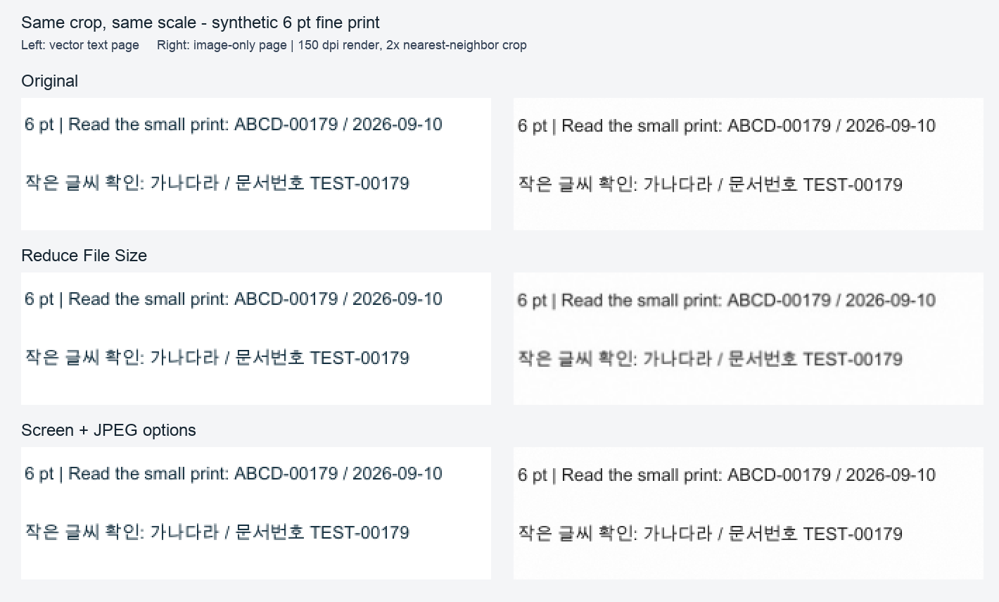

메일에 PDF를 붙이려 할 때 Mac의 미리보기에는 내장 기능이 있다. 파일 > 내보내기 > Quartz 필터 > Reduce File Size다. Apple도 압축 뒤 품질이 낮아질 수 있다고 안내한다. 하지만 실제로 필요한 질문은 조금 더 구체적이다. 작아진 PDF에서 내가 읽어야 할 글자와 문서번호가 계속 읽히는가?
이 실험에는 합성 PDF를 사용했다. 고객 문서, 실물 스캔본, 업로드 파일이 아니다. 두 페이지는 같은 내용을 서로 다른 방식으로 담았다.
PDF가 문서처럼 보여도 실제 페이지가 이미지일 수 있으므로 이 구분이 중요하다.

원본 크기 비교 그림, 합성 샘플 PDF, Reduce File Size 결과 PDF, 측정 JSON을 함께 제공한다.
원본을 덮어쓰지 말고, 압축본을 만든 뒤 같은 조건에서 비교한다.
내장 기능이라 별도 설치가 필요 없다는 점은 편리하다. 하지만 모든 PDF가 줄어들고, 같은 선명도를 유지하며, 모든 업무 요건을 만족한다고 보장하지는 않는다.
macOS 26.6.2, Preview 11.0에서 원본을 덮어쓰지 않고 새 파일로 내보냈다. 같은 두 페이지 PDF에 아래 세 가지를 적용했다.
Reduce File Size로 선택하고 나머지는 끈 내보내기| 파일 | 바이트 | 확인한 항목 |
|---|---|---|
| 원본 | 3,328,510 | 2페이지. 1페이지 텍스트 추출 가능, 2페이지 이미지 2550 × 3300 |
| 기본 내보내기 | 3,329,765 | 원본과 같은 페이지 수·텍스트 검사·이미지 크기 |
| Reduce File Size | 267,157 | 2페이지. 1페이지는 공백 정규화 뒤 원문 텍스트와 일치, 2페이지 이미지는 1224 × 1584 |
| 화면 최적화 + JPEG | 3,329,765 | 이 실험용 PDF에서는 원본과 같은 페이지 수·텍스트 검사·이미지 크기 |
출처: 2026-09-10 로컬 측정 기록. 텍스트 추출에 OCR을 쓰지 않았다. 공백을 정리한 뒤 텍스트가 일치한다는 검사는 화면 가독성 점수가 아니다.
Reduce File Size는 이 파일을 크게 줄였다. 동시에 이미지 전용 페이지의 크기는 2550 × 3300에서 1224 × 1584로 바뀌었다.
비교 그림을 같은 확대 비율로 보면 벡터 텍스트 페이지의 가는 획은 유지됐다. 이미지 전용 페이지의 6pt 한국어는 더 부드러워지고 일부 정보가 약해 보인다. 그렇다고 모든 글자가 읽을 수 없게 됐다고 말할 수는 없다. 그래서 파일 용량만 보고 선택하면 안 된다.
화면 최적화와 JPEG 두 체크는 이 합성 PDF에서 용량 이득을 만들지 못했다. 이것은 다른 PDF에서도 효과가 없다는 뜻이 아니다. 이 원본·설정·Preview 버전에서 나온 결과일 뿐이다.
이번 실행에서 Preview의 접근성 출력은 이미지 페이지의 일부 글자를 인식했다. 하지만 해당 PDF 페이지에는 텍스트가 저장되어 있지 않았다. 화면에서 인식됐다는 관측만으로 벡터 텍스트나 저장된 OCR이라고 판단할 수 없다. 수동 클립보드 복사는 시험하지 않았으며, PDF 구성 측정과 작은 글자 화면 확인은 별개다.
이것은 합성 2페이지 PDF 하나다. 비밀번호, 양식, 서명, 링크, 컬러 스캔, OCR, 복잡한 글꼴, 실제 개인 문서는 시험하지 않았다. 업로드 가능 여부, 법적 효력, 접근성도 측정하지 않았다. Apple도 압축본의 품질이 낮아질 수 있고 결과 크기와 이미지 품질은 선택한 옵션에 따라 달라질 수 있다고 안내한다.
이 글은 어떤 부분을 확인해야 하는지 알려 주는 실험 기록이다. 모든 PDF에 적용되는 압축법을 무조건 권하는 글이 아니다. 정확히 읽혀야 하는 번호나 문장이 있다면 보내기 전에 내보낸 사본에서 다시 확인한다.
공개: AI가 합성 실험용 PDF를 만들고, 로컬 PDF 구성 측정을 실행하고, Preview UI 내보내기 조작과 결과 검토를 수행했다. 별도 PDF 압축기를 구매하지 않았고 파일은 이 Mac 안에 머물렀다. 고객 문서를 사용하거나 업로드하지 않았다.
추가 자료: Apple의 Preview PDF 크기 줄이기 안내, Apple의 PDF 텍스트 선택·복사 안내.
아니요. Apple은 압축 후 품질이 낮아질 수 있다고 안내합니다. 이 실험의 이미지 전용 페이지에서는 작은 글자가 더 부드러워졌으므로 보내기 전에 중요한 페이지를 확인해야 합니다.
아니요. 텍스트 선택은 보조 검사일 뿐입니다. 이 실험은 OCR 텍스트가 없는 이미지 전용 페이지를 따로 두고 페이지 구성와 선택 동작을 구분했습니다.
그렇게 기대하지 마세요. 원본을 보관하고 같은 페이지와 확대 비율에서 비교한 뒤, 읽기 요건을 충족하는 파일을 선택하세요.
{kind=link}